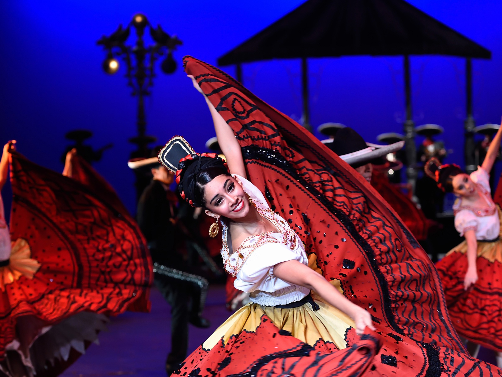

Regional Styles of Mexico
Jalisco
Traditional
The state of Jalisco is famous for the Jarabe Tapatío (the Mexican Hat Dance). Dancers are known for their heavy, colorful ribbon dresses and the men's traditional Charro suits. Performed with live Marachi, a very lively and energentic dance.
Veracruz

In contrast to Jalisco, Veracruz dances feature elegant, all-white lace costumes. The music is often Son Jarocho, featuring harps and guitars.
- Music Style
- Son Jarocho
- Key Move
- La Bamba (Tying a bow with feet)